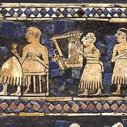

Musikens historia – Före kristus

En detalj från "Standarden från Ur" som visar en lyraspelare.
Den äldsta formen av musik har man kunnat datera till ungefär 4750 år sedan då man har hittat delar av fyra harp-/lyraliknande instrument från en forntida stad vid namnet Ur i vad som en gång var Mesopotamien i nuvarande Irak. Man har även försökt att återskapa dessa instrumenten men än utan tillfredsställande resultat.
Under tiden före Kristus har man även hittat